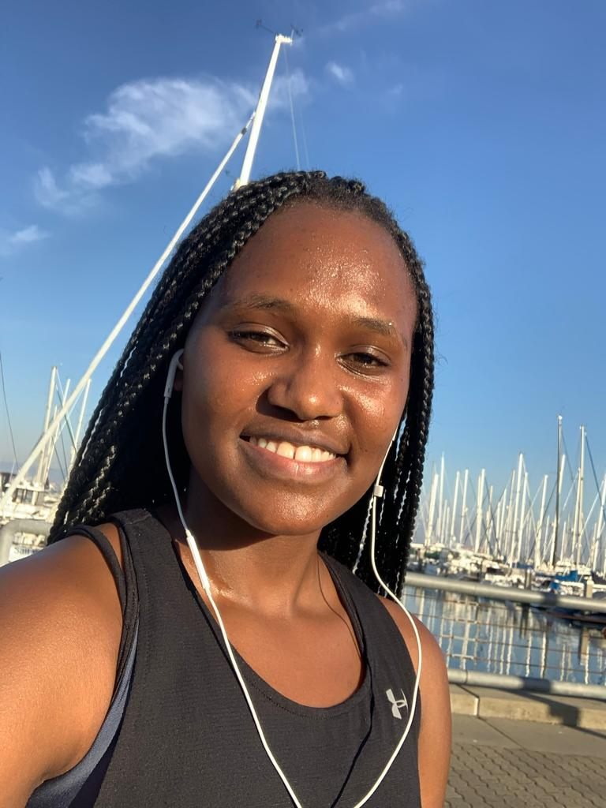
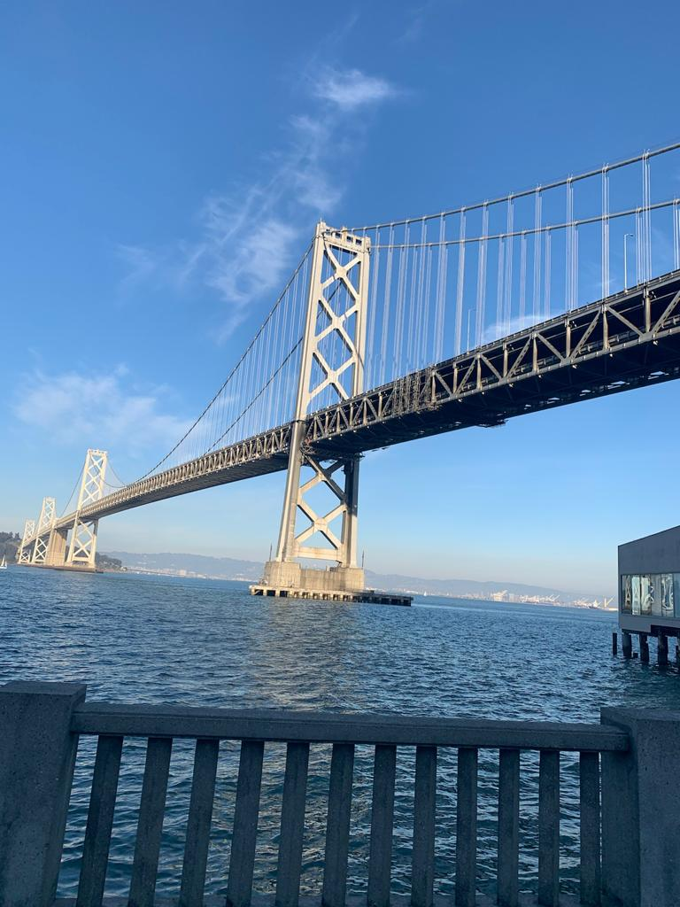

My freshman Year
2019 – 2020, Davidson College
Documenting my various experiences as a freshman

Activities
Among the activities I took part in my freshman year are:- Women Track and Field
- Davidson Outdoors
- Backpacking
- Davidson African Student Asssosication
Classes
My Fall Semester Classes:- Principles of Chemistry
- Intro to Africana studies
- Finite Mathematics and its Application
- Writing 101
- Exploration in Computer Science
- Science Fiction and Technology
- Critical Web Design
- Practicum

Study Abroad
Study Abroad in San Francisco was one of my best moments of my freshman year. I enjoyed living and learning in a city. The program exposed me to various careers in the tech world. I have also been able to develop my coding skills by learning:- Javascript
- HTML
- SQL
- CSS
Thanksgiving Break

Philadelphia. Enjoying thanksgiving with friends
Fall Break

Washington, DC. A visit to the Capitol
Winter Break
New York City. Weinsten Travel Project